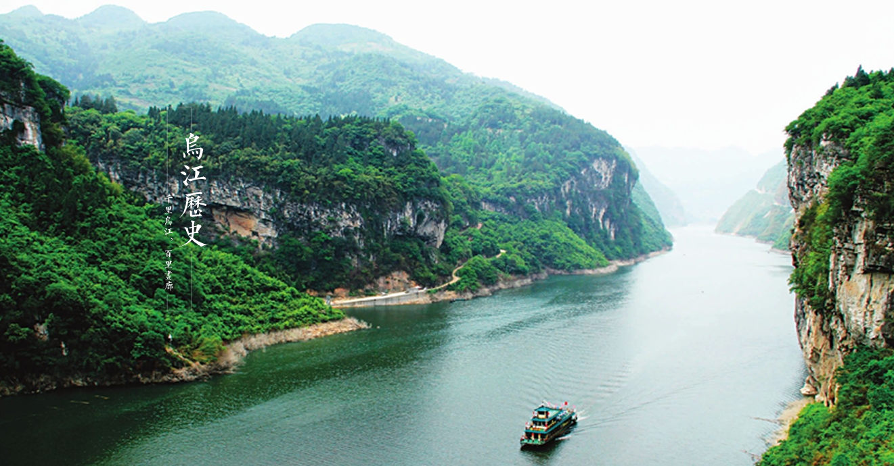

乌江发源于贵州省威宁县，自贵州省沿河县进入重庆酉阳自治县万木乡、龚滩古镇、彭水自治县，至重庆涪陵汇入长江，干流
全长1037公里，其中乌江彭水自治县、酉阳龚滩古镇至贵州沿河段约100公里，拥有“千里乌江，百里画廊”的美誉。
乌江百里画廊“山似斧劈、水如碧玉、虬枝盘旋、水鸟嬉翔”，“奇山、怪石、碧水、险滩、古镇、廊桥、纤道、悬葬”构成了乌 江画廊的景观要素。特别是荔枝峡、白芨峡、土坨子峡是乌江画廊的精品，清代诗人翁若梅赞叹：蜀中山水奇，应推此第一。
乌江百里画廊是市级风景名胜区，乘坐乌江画舫便可游览此美景。其周边民俗古朴，有千年不变的美丽—阿依河，有重庆历史文化 第一古镇龚滩，有原始幽深的神龙谷，有苗家山歌的发源地鞍子苗寨，有国家级自然保护区—麻阳河，有养生避暑胜地-摩围山等 ，形成了一个拥有丰富旅游资源的集群。
乌江百里画廊历史悠久，文化积淀深厚。龚滩古镇有1700余年的历史；古代巴国蛮王洞建于战国时代；马鞍城是南宋金头和尚起 义遗址；僰人悬葬是东汉南少数民族僰人的风俗，巴人纤道历史久远，“惊涛拍岸”、“竹零诗龛”等文化遗迹积淀厚重，颇具研究 价值。乌江百里画廊民族风情异彩纷呈，是土家摆手舞之乡酉阳的西大门景区，是西兰卡普、蜡染的摇篮。古老的土家族背嫁哭 嫁，独特的苞谷灯戏、阳戏、马马灯、民间青年男女表达爱情的“木叶情歌”，众多的民间的手工艺品，组成了当地独具魅力的民 族风情。
雄奇险秀的河谷沟壑，鬼斧神工的悬崖绝壁，桀骜不驯的乌江、欢快奔流的阿蓬江，点缀在秀美的乌江百里画廊，受到了无数科 考、探险、摄影爱好者、电影、电视剧组的青睐。乌江百里画廊是一颗尚待雕琢的宝石，不久的将来，一定会变成璀璨的明珠。
在2011年广东人最喜爱的旅游目的地（线路）评鉴活动中重庆乌江画廊最终被评为“最诗意”奖，而下属的阿依河景区，先后荣 获“全国民族文化旅游新兴十大品牌”、“中国之美十大自驾游黄金线路”、重庆“巴渝新十二景”、“影响重庆旅游发展贡献奖·十 大景区”、 “中国旅游品牌总评榜·年度最具魅力景区品牌”、“清凉胜地”等殊荣，成为重庆生态旅游新宠。
乌江百里画廊“山似斧劈、水如碧玉、虬枝盘旋、水鸟嬉翔”，“奇山、怪石、碧水、险滩、古镇、廊桥、纤道、悬葬”构成了乌 江画廊的景观要素。特别是荔枝峡、白芨峡、土坨子峡是乌江画廊的精品，清代诗人翁若梅赞叹：蜀中山水奇，应推此第一。
乌江百里画廊是市级风景名胜区，乘坐乌江画舫便可游览此美景。其周边民俗古朴，有千年不变的美丽—阿依河，有重庆历史文化 第一古镇龚滩，有原始幽深的神龙谷，有苗家山歌的发源地鞍子苗寨，有国家级自然保护区—麻阳河，有养生避暑胜地-摩围山等 ，形成了一个拥有丰富旅游资源的集群。
乌江百里画廊历史悠久，文化积淀深厚。龚滩古镇有1700余年的历史；古代巴国蛮王洞建于战国时代；马鞍城是南宋金头和尚起 义遗址；僰人悬葬是东汉南少数民族僰人的风俗，巴人纤道历史久远，“惊涛拍岸”、“竹零诗龛”等文化遗迹积淀厚重，颇具研究 价值。乌江百里画廊民族风情异彩纷呈，是土家摆手舞之乡酉阳的西大门景区，是西兰卡普、蜡染的摇篮。古老的土家族背嫁哭 嫁，独特的苞谷灯戏、阳戏、马马灯、民间青年男女表达爱情的“木叶情歌”，众多的民间的手工艺品，组成了当地独具魅力的民 族风情。
雄奇险秀的河谷沟壑，鬼斧神工的悬崖绝壁，桀骜不驯的乌江、欢快奔流的阿蓬江，点缀在秀美的乌江百里画廊，受到了无数科 考、探险、摄影爱好者、电影、电视剧组的青睐。乌江百里画廊是一颗尚待雕琢的宝石，不久的将来，一定会变成璀璨的明珠。
在2011年广东人最喜爱的旅游目的地（线路）评鉴活动中重庆乌江画廊最终被评为“最诗意”奖，而下属的阿依河景区，先后荣 获“全国民族文化旅游新兴十大品牌”、“中国之美十大自驾游黄金线路”、重庆“巴渝新十二景”、“影响重庆旅游发展贡献奖·十 大景区”、 “中国旅游品牌总评榜·年度最具魅力景区品牌”、“清凉胜地”等殊荣，成为重庆生态旅游新宠。
